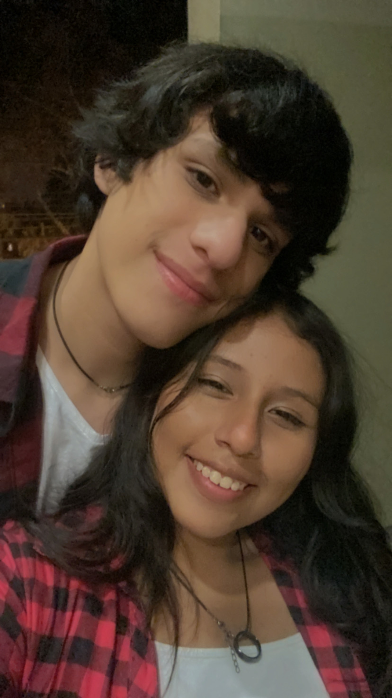
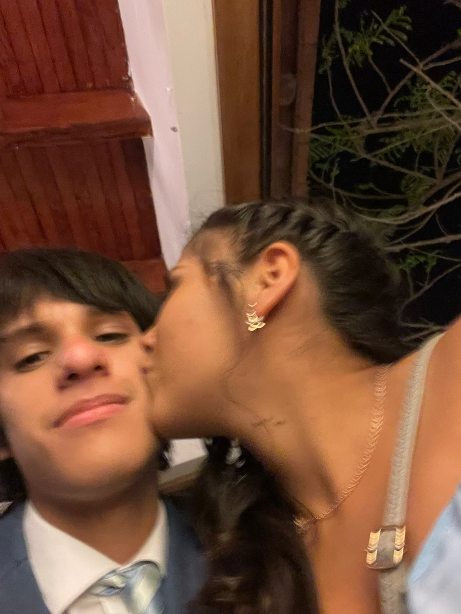
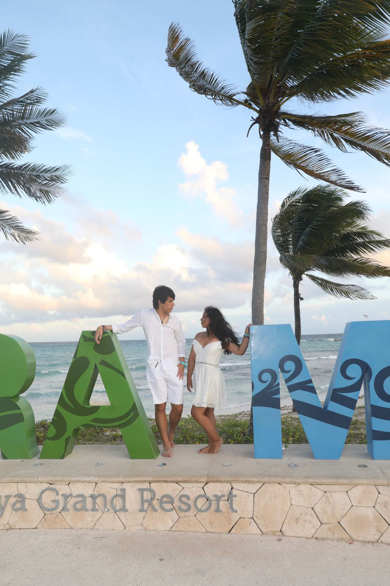
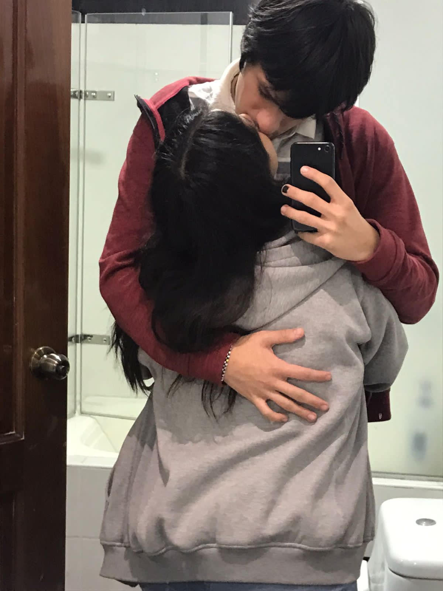
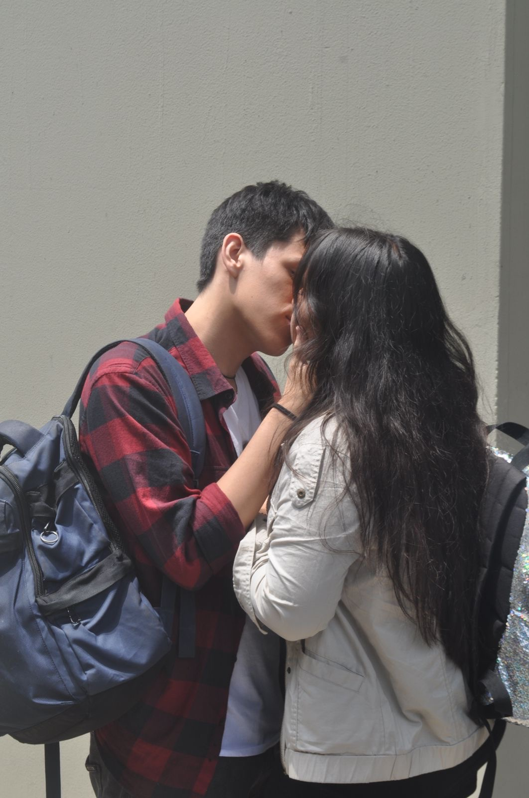
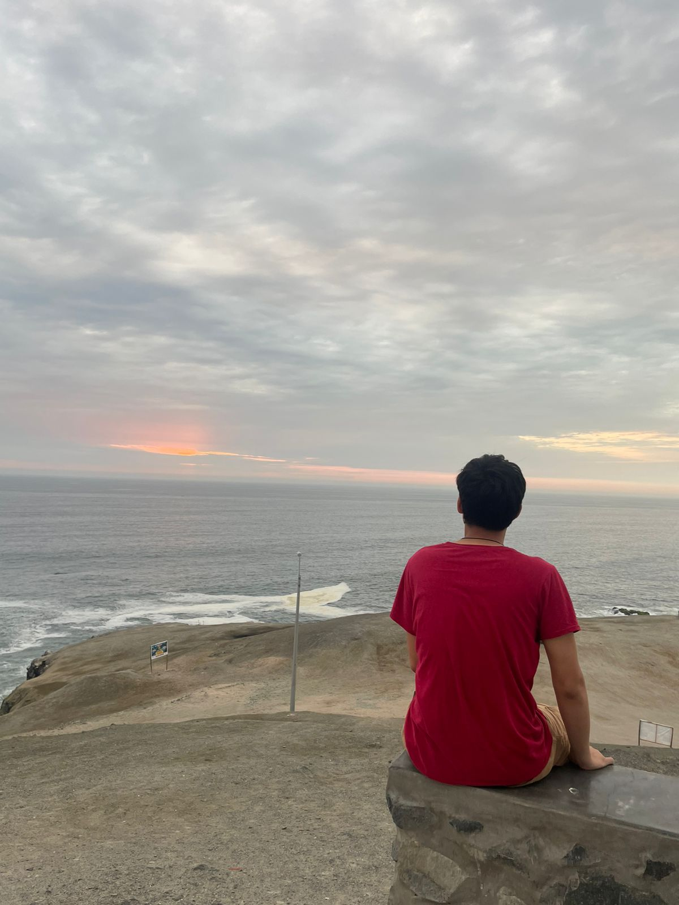

01
Pq me cuidas de verdad
Eres atento con como estoy y siempre estás pendiente d mis tareitas y notas, incluso en cositas q no me gustan hacer, siempre estas ahi.
Seis años después y seguimos aquí... jodiendonos, apoyándonos, jugando, aprendiendo cosas juntos y convirtiendo días aburridos en recuerdos que no cambiaría por nada >:3

No están en orden porque tbh, seis años no caben en una línea de tiempo bonita. Pero estos si o si tenían que estar aquí
Una esquina bastante normal pero que ahora cada vez que paso por ahi no puedo evitar recordar aquel dia que me pediste hasta rogando que te de un beso antes de irte.
Nuestro viaje de prom, un poco caotico ngl pero dentro de todo es algo que siempre recordare con cariño. Cada beso, abrazo y risa se quedo en mi memoria, ojala podamos viajar juntos otra vez algun día.
Porque sí, aunq en un inicio no me gustaban tus canciones-- de alguna manera u otra me enseñaste a quererlas... aun estoy intentando q me gusten, dame paciencia TwT.
Horas jugando, a veces coordinados, a veces culpándonos y varias gritando. Y si... siempre recordare que gracias a ti me se todos los pokemon de la primera generación...crj.
Haru llegó por ti y siempre te agradecere por eso. Por mas rasguños, mordidas, escapadas y comelona q sea la quiero muchito y a ti tmb.
Tú con tu karate y taekwondo, yo con lucha. Por mas temprano q sea, agradezco siempre que intentemos llegar a la competencia del otro y apoyarnos mutuamente. Q este año sea igual, pa verte ganar tu oro :3
Eres atento con como estoy y siempre estás pendiente d mis tareitas y notas, incluso en cositas q no me gustan hacer, siempre estas ahi.
Me gusta verte esforzarte por lo tuyo. Admiro mucho esa parte de ti q piensa, aprende, trabaja y sigue buscando avanzar.
Podemos pasar de algo serio a reirnos en segundos y eso es lo que me gusta de ti (maas q nd cuando te hago cosquillitas).
Tus detalles muchas veces vienen en forma de “yo pago” o "que quieres amor". Asi q, por fin! Ya entendí tu love-language maldito.
Los ojos caramelo, los brazos fuertotes y ese cabello q por mas q ande caoso (ehe :3)- igual me gusta.
Con mis wbdas, mis ocurrencias y todo lo que viene incluido en el paquete. Y aun así sigues a mi lado, pndj de tu parte, pero mejor pa mi.






OK-- No iba a llenar toda la página de Pokémon pq dentro d todo no es tanto mi estilo yk... pero tampoco podía dejar a esta ternurita d lado :3
#1
toca para abrir
Gracias por tener la paciencia de enseñarme sobre Pokémon hasta que algo se me queda. Eventualmente...
#2
toca para abrir
Gracias por las cosas q haces por mi, por mas pequeña o grande igual lo aprecio mucho :3
#3
toca para abrir
Thankiu for trying and being the best bf ever, ily u so much u have no idea the things id do for u.
6 años… q loco, no? A veces pienso en todo el tiempo que llevamos juntos y siento que han pasado demasiadas cosas, pero al mismo tiempo parece que fue ayer cuando todo empezó y cuando me enamore d ti :3
Espero no hacerla tan larga la vrd, pq tengo poquito tiempo y pues lo estoy haciendo mientras andas mimido tmb-- pero weno TwT
Hemos cambiado muchísimo desde q nos conocimos. Hemos crecido, aprendido, cometido errores-- terminado incluso-- pero igual hemos tenido momentos demasiado bonitos y maravillosos. Pero por mas cosas que hayan pasado, aquí estamos. Después de todo, seguimos eligiéndonos.
Tbh creo q una de las cosas q más me gustan de nosotros es justamente eso. Que nuestra relación nunca ha sido perfecta, pero siempre ha sido nuestra. Hemos tenido nuestras peleas, nuestras diferencias, nuestros momentos de molestarnos por tonterías (mas yo ehe), pero tmb hemos tenido tantas risas, conversaciones, abrazos, salidas y pequeños momentos que probablemente para los demás no significan nada, pero para mí terminaron convirtiéndose en algunos de mis recuerdos favoritos.
But anyways, gracias por aguantarme cuando estoy insoportable, por escuchar mis dramas, por acompañarme en mis ideas locas, por hacerme reír cuando estoy molesta y por estar conmigo incluso en esos días en los que ni yo misma sé qué me pasa (y ni digas la regla crj).
Me hace feliz pensar en todos los recuerdos q tenemos, pero creo q me emociona incluso más pensar en todos los q todavía nos faltan. Quiero seguir saliendo contigo, viajando contigo, conociendo lugares nuevos, haciendo planes que quizá salgan mal pero que después nos den risa, celebrando nuestras cosas y simplemente compartiendo la vida contigo.
Gracias por haber sido parte de tantos momentos importantes de mi vida y por dejarme ser parte de los tuyos.
Te amo mucho, Mochi. Gracias por estos 6 años y por todos los que nos faltan. ♡
Feliz aniversario, pndj... Te amo. ♡